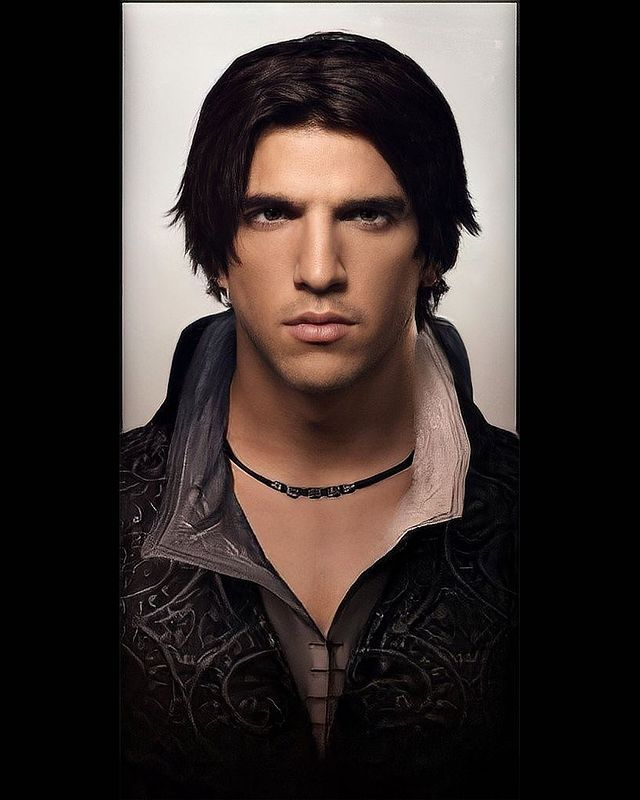

<!DOCTYPE html>
<html lang="fr">
    <meta charset="utf-8">
    <title>CV Ezio Auditore</title>
    <link rel="stylesheet" href="css/cv-ezio-auditore.css.css">
</html>

<body>
    <section style="text-align:center ;">
    <H1>Ezio Auditore</H1>
    
    <h1>12 rue San Antonio, Firenze</h1>
    <h1>293-131-1324</h1>
    <h1>eziodafirenze@assassino.com</h1>
    </section>

    <aside>
        <section style="text-align: left ;">
            <H1>Compétences</H1>
            <ul>
                <li>Sait se dissimuler dans la foule</li>
                <li>Parle Italien, Français et Espagnol</li>
                <li>Arrive à s'introduire dans le palais des Médicis</li>
            </ul>

            <h1>Hobbies</h1>
            <ul>
                <li>Assassiner des templiers</li>
                <li>Assassiner des gardes royaux</li>
                <li>Chanter en Italien</li>
            </ul>
        </section>
    </aside>

    <section style="text-align: center;">
        <h1>Parcours professionnel</h1>
        <section>
        <h4>Banquier à Firenze</h4>
        <p>A travaillé dans la banque de son père avant l'exécution de ce dernier</p>
        </section>
        <section>
        <h4>Maître assassin</h4>
        <p>A assassiné tous les templiers d'Italie</p>
        </section>
    </section>

    <br>
    <br>

        <section style="text-align:center ;">
        <h1>Parcours académique</h1>
        <section>
            <h4>Escalade de bâtiments publics</h4>
            <p>A esacaladé tous les bâtiments publics de Firenze</p>
        </section>
        <section>
            <h4>Maniement de la lame secrète</h4>
            <p>A réussi à sortir sa lame secrète sans se couper l'annulaire</p>
        </section>
        </section>
</body>